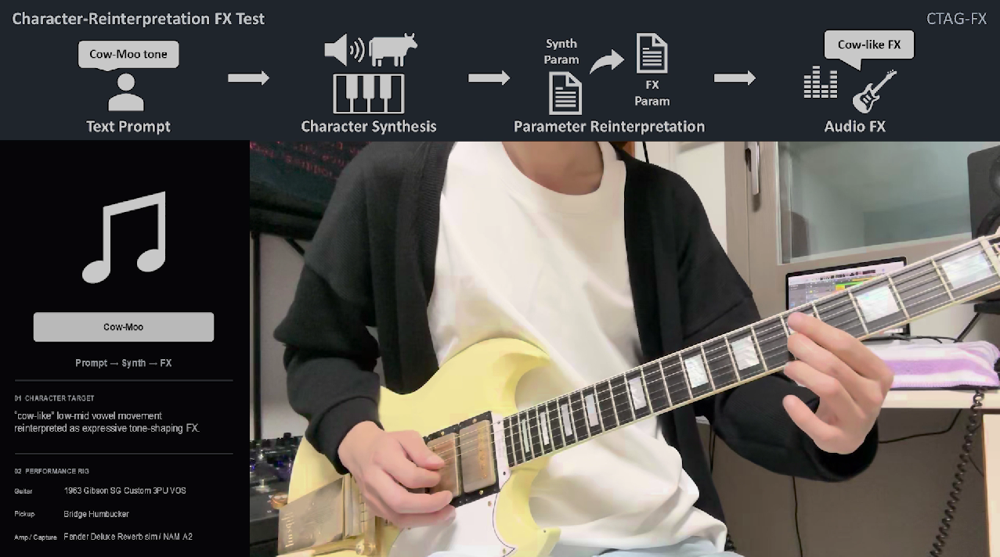
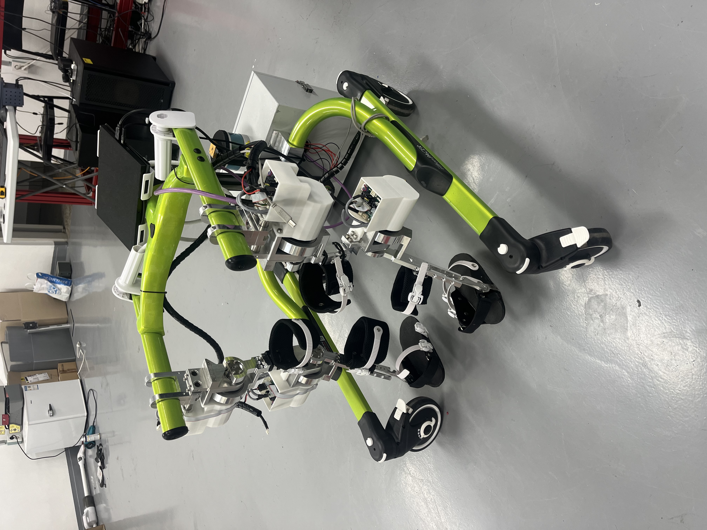
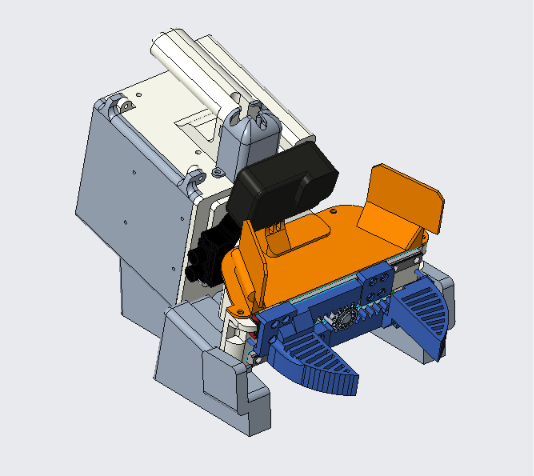
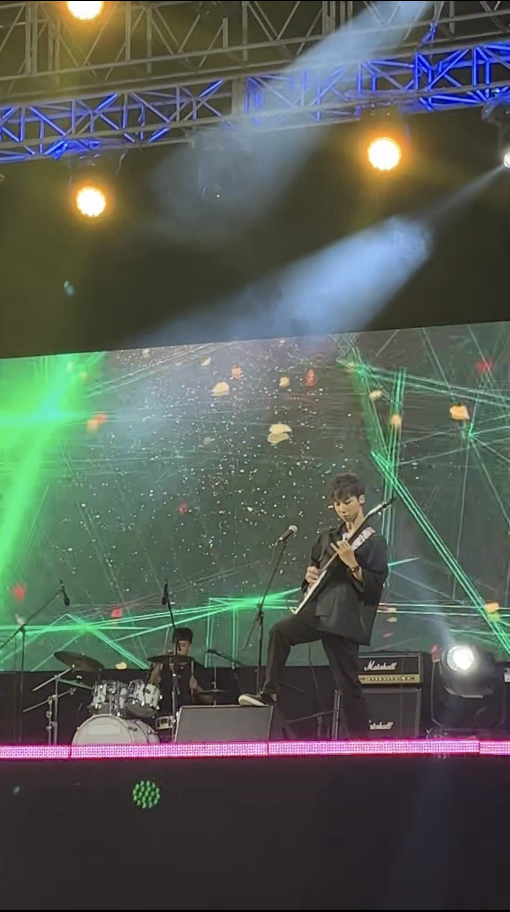
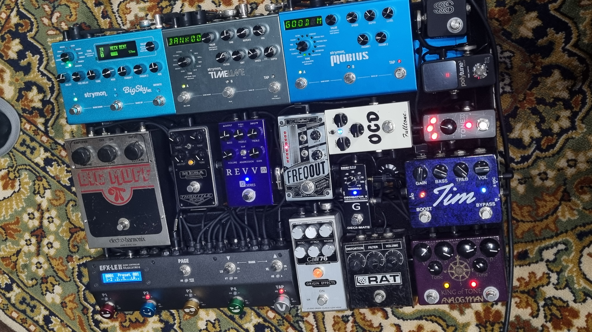

CTAG-FX
Audio FX & AI
I developed a text-guided audio FX system by reinterpreting synthesizer parameters for expressive tone shaping.
View Project ↗ENGINEERING MUSICIAN · CREATIVE TECHNOLOGIST
I design robotic hardware, develop control systems, and create audio tools—exploring how engineering can expand musical expression.
Explore My WorkMove your cursor to apply force. No click needed.
Pull back to rest.
Resistance to motion.
Resistance to acceleration.
Exploring engineering and musical expression.
CTAG-FX · MIRACLE · UMI-F/T

Audio FX & AI
I developed a text-guided audio FX system by reinterpreting synthesizer parameters for expressive tone shaping.
View Project ↗
Robotics & Control
I designed pediatric exoskeleton hardware and investigated sensorless impedance control through dynamic modeling and simulation.
View Project ↗
Robotic Hardware & Force Sensing
I designed and prototyped a wireless two-axis force-sensing extension for the UMI gripper.
View Project ↗Performance · My Tone Laboratory

Live Performance & Musical Expression
A collection of my live performances, band activities, and musical demonstrations over the years.
View Project ↗
Sound Design & Musical Gear
My space for exploring guitar effects, sound design, and programmable signal chains.
View Project ↗Music as expression & exploration.
Hello, my name is Geonung Jo, and my artist name is Wilt.
Alongside my research in robotics, control systems, and audio effects, I've spent over 16 years playing guitar, performing with bands, and exploring sound through musical instruments and gear.
I want to bring technologies I develop in the lab onto the stage, engage with audiences, and turn those experiences into new research ideas.
My goal is to connect sound, movement, and wearable robotics to expand musical expression.